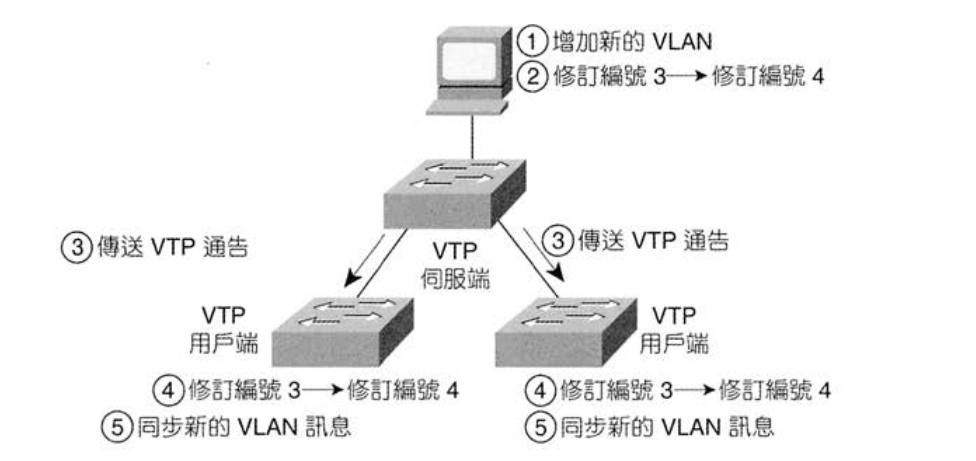
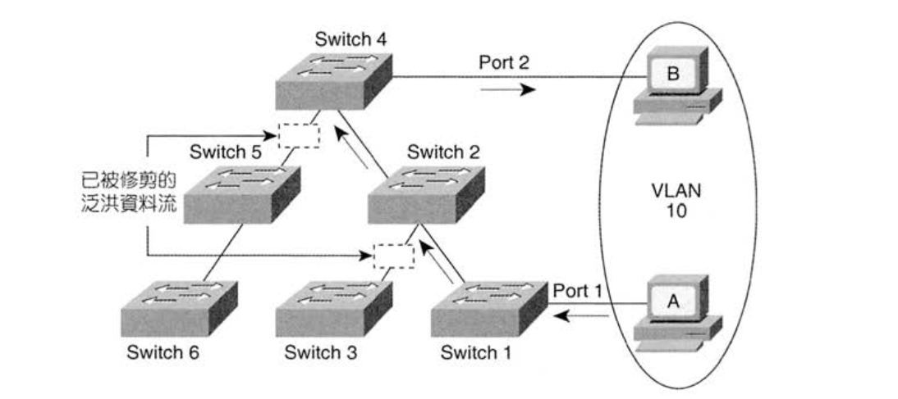
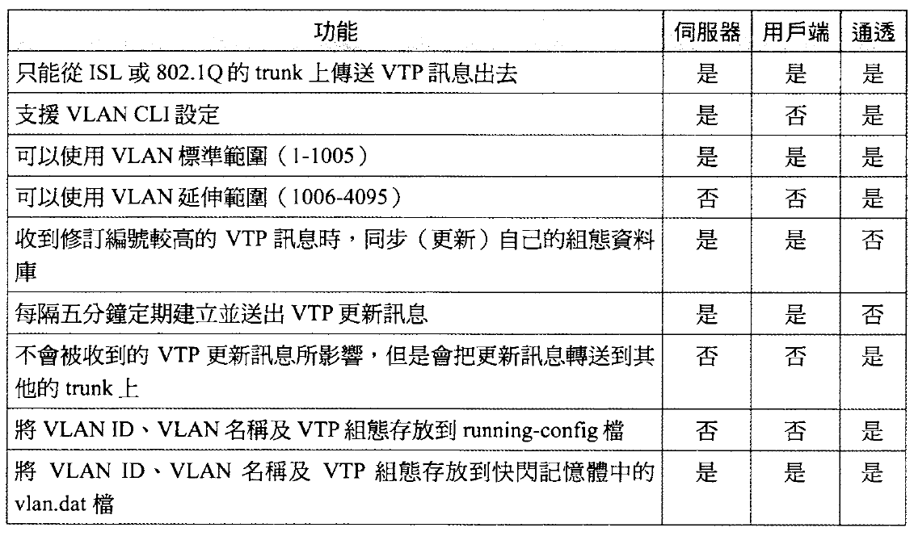

- 首頁
- 大一
- 大二
- 大三
- 大四
- 網路相關
- LAN Design
- Layer 2
- Layer 3
VTP (VLAN Trunking Protocol)
想像以下情況：有一個網路中有 10 台 Switch，彼此用 Trunk 連接，現在要將 VLAN 3 這個 VLAN 加到這個網路中，且每個 Switch 上至少都有一個 VLAN 3 的 interface，如果沒有其他工具，我們就只能手動連接 10 台 Switch，然後一台一台將 VLAN 3 這個 VLAN 加到 Trunk link 中…
VTP 是由 Cisco 制定的一個 Layer 2 的通訊協定，主要目的是要讓 Switch 間可以彼此交換 VLAN 的資訊。也就是說，當一個 VLAN 在一台 Switch 上被改動時，有跑 VTP 的 Switch 也會跟著同步這些資訊。
每台 Switch 會定時 (5分鐘) 的發出 VTP 訊息，在設定修改後也會主動發出。
VTP 模式
VTP 有三種模式：
- 伺服器模式(server mode): 在 server 設定 VLAN，所有的 server 及 client 都會同步 VLAN 資訊
- 用戶端模式(client mode): client 無法設定 VLAN
- 通透模式(transparent mode): 直接忽略 VTP msg
VTP 伺服器和用戶端收到 VTP 更新資訊後，是依據 VLAN資料庫組態修訂編號 (VLAN database configuration number) 來決定要不要更新自己的 VLAN 組態。
每次 VTP 伺服器修正自己的組態時，就會將 VLAN 組態修訂編號 +1 再傳出，當另外一台用戶端/伺服器收到的 VTP 訊息的 VLAN 組態修訂編號比自己還高時，才會更新自己的 VLAN 組態。

不使用 VTP：通透模式
如果不使用 VTP，沒辦法直接在 Switch 上設定停用 VTP，而是要使用 VTP transparent mode。Transparent mode 有以下特性：
- 不接收、放出 VTP 訊息
- 可修訂 VLAN
- 會幫其他 Switch forward VTP 訊息
VTP 訊息類型
VTP 有三種訊息類型：
- 摘要通告(summary advertisement) (每 5 分鐘傳送一次)
- 修訂編號
- 領域名稱
- 不包含 VLAN 資訊
- 子集合通告(subset advertisement) (在修改設定後傳出，可能一次有多個)
- 通知 VLAN 訊息
- 通告要求(advertisement request)
- 新 Trunk 上來時，主動要求
VTP 領域
VTP Domain 可以區分不同 Switch 的群組，讓彼此設定獨立不互相干擾。
VTP 運作條件
- Switch 間必須啟用 VLAN Trunking
- VTP domain name 是否相同
- 若設定密碼，那麼兩台交換器都要設定 VTP 密碼，且大小寫必須相符 (密碼在傳輸時有加密)
VLAN 設定存在哪?
- VLAN 的資料不會存到 config 中，而是存到 VLAN DB (在 flash 中)
- 更新資料時會即時儲存進 vlan.dat
- 清除 VLAN 組態時只輸入
erase startup-config是不夠的，VLAN 設定及 VTP 組態仍存在 vlan.dat 中，所以要額外清除這些設定時還要下delete flash: vlan.dat這條指令 - Transparent mode 時除了將設定存到 vlan.dat 也會存到 running-config
VTP 版本
VTP 1 - 3
VTP v2 相較 v1 有個重大的改變：
在 transparent mode 時，VTP v2 在 domain name 與 passwd 不合的時候還是可以被 forward，VTP v1 則會直接丟棄，因此如果網路中存在多個 VTP domain，VTP v1 不會轉送所有的 VTP 更新。
VTP 修剪
若 STP 沒有封鎖 Trunk port，則 Switch 會將每個 active VLAN 進行 broadcast flood 到所有的 Trunk port。因為並非所有的 Switch 都有設定 VLAN，如此會造成很多不必要的廣播訊框。
有兩種方法可以限制：
- 在每個 Trunk 上手動設定 VLAN 許可清單 (allowed VLAN list)
- VTP 修剪 (VTP Pruning)，由 VTP 動態決定哪些交換器不需要收到來自某些 VLAN 的訊框，然後從合適的 Trunk 剪掉這些 VLAN。

Switch 1, 4 有 VLAN 10 的 port，當開啟 VTP Pruning 後 Switch 2, 4 會使用 VTP 來得知部分的 Switch 沒有一個 port 指定到 VLAN 10，於是 Switch 2,4 便從 Trunk 修剪掉 VLAN 10
VTP 功能整理
